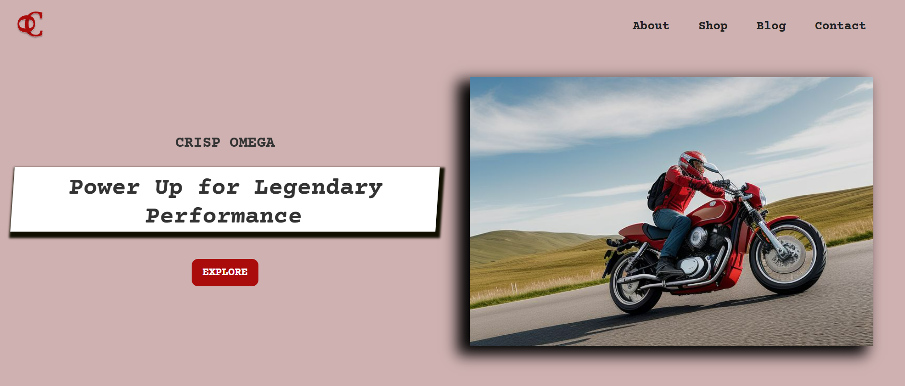

I’m Roji, and I love creating websites that provide a seamless user experience. With a solid grasp of HTML, CSS, and JavaScript, I transform ideas into beautiful, intuitive and functional online experiences. Let's build an amazing website together!
A website for a Motorcycle company
